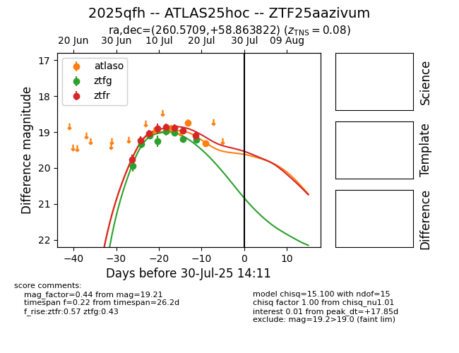

Target 2025qfh at 2025-07-30 14:11, see:
FINK: fink-portal.org/2025qfh
Lasair: lasair-ztf.lsst.ac.uk/objects/2025qfh
ALeRCE: alerce.online/object/2025qfh
TNS: wis-tns.org/object/2025qfh
YSE: ziggy.ucolick.org/yse/transient_detail/2025qfh
alt names
ZTF25aazivum (ztf,fink)
2025qfh (tns,yse)
ATLAS25hoc (atlas)
coordinates:
equatorial (ra, dec) = (260.5709,+58.86382)
galactic (l, b) = (87.4966,+34.39063)
photometry
last atlaso=19.32, ztfg=19.21, ztfr=19.10
3 atlaso, 8 ztfg, 8 ztfr detections
